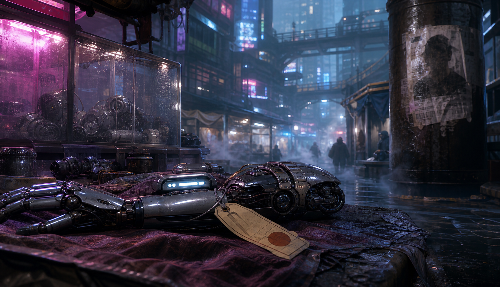

MÓDULO — Las Desapariciones
Ambientado en Oasis (tesela recién despertada) — módulo independiente, colgado del DLC Oasis. Estado: BORRADOR, pendiente de playtest.
«Nadie con influencia ha desaparecido todavía. Por eso nadie con influencia está investigando de verdad.»

Una pieza demasiado barata y demasiado reciente. Nadie que la mira dos veces pregunta de dónde vino.
Resumen operativo — léelo antes de dirigir
Premisa: cinco personas han desaparecido en dos semanas, en el mismo barrio entre los niveles bajos y comerciales de Oasis. Sin notas, sin peleas previas, sin cuerpos casi nunca — y cuando aparece uno, le faltan implantes u órganos cibernéticos de valor. La policía de barrio no tiene orden clara de investigar a fondo; los propios vecinos ya han empezado a hacerlo por su cuenta.
Duración: una sesión de 4-6 horas, en varias noches de juego dentro de la ficción (no una sola noche continua). Periodo recomendado: antes del despertar. Perspectiva: nativos o mixta.
Qué saben los PJ: los carteles de desaparecidos, capas y capas de ellos; el rumor de barrio; que la policía prefiere detener a un forastero antes que investigar de verdad.
Verdad del Narrador (ruta por defecto — ver Rutas alternativas para cambiarla): Verek, antiguo técnico de implantes que perdió su licencia cuando la reconstrucción favoreció a proveedores corporativos, retomó en solitario el patrón de un caso ya cerrado hace años —el llamado Taller del Carnicero— cazando gente que nadie va a reclamar con fuerza para revender sus piezas cibernéticas de valor. No se ve a sí mismo como un monstruo: se dice que solo "recicla lo que la ciudad ya había desechado". Vende a un comprador fijo del Operador de Mort, que compra sin preguntas y sin saber —o sin querer saber— la escala real de lo que compra.
Objetivo inmediato: encontrar a Verek y detener las extracciones antes de que desaparezca alguien más — y, si llegan a tiempo, antes de que llegue el turno de Sael, una de las próximas víctimas ya elegidas.
Pregunta de fondo: Oasis presume de que a nadie le faltan alimentación, sanidad ni educación por defecto — pero cuando alguien no tiene a nadie con influencia detrás, ¿qué le impide convertirse literalmente en piezas de recambio para quien sí la tiene?
Si nadie interviene: la cifra de desaparecidos sigue subiendo, el mercado negro de implantes se vuelve más difícil de rastrear, y la policía sigue deteniendo forasteros en vez de investigar — lo que puede golpear directamente a los propios PJ si no encajan del todo en la ciudad.
Desarrollo en cinco escenas
- El barrio pregunta — carteles, rumores, y un precedente que algunos todavía recuerdan.
- La vendedora nerviosa — un mercado de implantes de segunda mano con más respuestas de las que parece.
- Seguir el rastro — vigilar, proteger o adelantarse a Verek antes de que actúe sobre Sael.
- El punto de extracción — confrontación, y la posibilidad real de llegar a tiempo por Sael.
- Qué se hace con la red — Verek, el comprador, y una ciudad que decide cuánto le importa esto de verdad.
Panel del Narrador — léelo antes de sentarte a la mesa
Presión narrativa, no cuenta atrás de horas: este módulo se investiga a lo largo de varias noches de ficción, no en una sola sesión de reloj. No fuerces horas exactas — la presión viene de que cada noche que pasa sin una pista real, el riesgo de una sexta desaparición crece. Usa esa idea para decidir cuándo introducir la Escena 3 (el grupo ya tiene lo suficiente para seguir un rastro real) en vez de una tabla de tiempo.
Cómo avanza el tiempo de ficción: cada escena puede ocupar su propia noche, con el día entre medias resuelto en una frase ("preguntáis durante el día, sin mucho más que rumores repetidos"). No hace falta simular las horas de luz.
Las tres partes, en una frase:
- Verek → seguir operando sin que nadie note el patrón, convencido de que elige a quien "la ciudad ya ha desechado".
- Dreska → protegerse a sí misma sin convertirse en cómplice activa de algo que ya sospecha.
- El Operador de Mort → seguir comprando sin preguntas, sin que esto le salpique ni le cueste su red.
No hay villano de manual. Verek no es un sádico — es un hombre que perdió su medio de vida legítimo y ha racionalizado algo indefendible. El Operador de Mort no organiza las desapariciones, solo compra lo que le ofrecen sin comprobar de dónde sale — una negligencia real, no una orden. La violencia solo tiene sitio si Verek se siente acorralado sin salida.
Verek, en mesa: metódico, no impulsivo. No persigue a los PJ activamente si le sorprenden investigando — prefiere desaparecer y montar su operación en otro sitio antes que arriesgarse a una confrontación directa. Solo lucha si lo acorralan físicamente sin escapatoria. Su objetivo siempre es completar la extracción y desaparecer, nunca eliminar testigos; su criterio de retirada es cualquier indicio de que lo han localizado antes de terminar. Herido, huye por la ruta que mejor conozca, sin intentar rematar nada. Si pierde a Sael u otra víctima ya elegida, la sustituye por otra persona del mismo perfil en los días siguientes — no insiste en un objetivo concreto una vez perdido.
Cadena causal de la caza — para que el Narrador la tenga clara de principio a fin:
- Patrón: Verek elige víctimas sin familia ni contactos con influencia, siempre de noche, siempre en trayectos solitarios entre niveles — nunca en su propio domicilio ni en un lugar concurrido.
- Por qué Sael encaja: trabaja de noche, vive sola, y su ruta habitual cruza tramos poco vigilados entre niveles — exactamente el perfil que Verek ya ha usado cinco veces.
- Indicios que permiten comprenderlo: el patrón se reconstruye cruzando los carteles de desaparecidos (perfiles, horarios, rutas) con cualquier información sobre el propio Verek (su antiguo oficio, su forma de operar) — ninguna pista aislada basta por sí sola, pero dos cualesquiera de las señales ya bastan para que el grupo ate cabos.
- Cómo saben dónde intervenir antes de la desaparición: una vez identificado el patrón y localizado el punto de extracción (Escena 3), la ruta nocturna de Sael y el punto de extracción son piezas del mismo mapa — seguir a Verek, vigilar a Sael, o vigilar el punto llevan al mismo lugar por caminos distintos.
- Qué adelanta o retrasa a Verek: cada noche sin que el grupo actúe es una noche más cerca de que elija a su próxima víctima; una pista mal gestionada (alertarlo sin querer) lo hace más cauto y retrasa su próximo movimiento, pero no lo detiene.
Lo que ocurrió realmente
Verdad completa (ruta por defecto)
Hace años, un caso ya cerrado —el Taller del Carnicero— consistió en un vendedor de implantes de segunda mano que resultó ser el responsable de una ola similar, descubierto demasiado tarde y silenciado por alguien antes de que pudiera hablar. Verek conocía el caso de primera mano: trabajaba entonces en el mismo gremio. Cuando perdió su licencia legítima —la reconstrucción favoreció a proveedores corporativos y grandes clínicas, dejando fuera a técnicos independientes como él— retomó el patrón en solitario, convencido de que solo está haciendo lo que el sistema ya le enseñó a hacer, con gente que el propio sistema ya había abandonado.
Elige a sus víctimas entre quienes no tienen a nadie con influencia real detrás — perfiles variados a propósito, unidos solo por esa ausencia. Extrae los implantes con la misma limpieza profesional que aprendió legítimamente, y vende a través de un comprador fijo conectado con el Operador de Mort, que no hace preguntas sobre el origen.
Dreska, vendedora del mercado de implantes, ha empezado a notar que circulan piezas "demasiado baratas y demasiado recientes" — sospecha de dónde vienen, pero no lo suficiente como para señalarlo sin pruebas, ni tan poco como para no ponerse nerviosa cuando se lo preguntan directamente.
Qué saben los PJ y qué no
Pueden llegar a saber todo lo anterior investigando. Lo que no deben poder resolver desde el principio es si esto tiene alguna relación con el despertar o con las corporaciones infiltradas — no la tiene, en esta ruta, y el módulo no debe insinuar lo contrario.
Tono
Investigación urbana con textura social real — desigualdad, precariedad, gente que nadie más va a buscar. Verek debe resultar comprensible, no un monstruo de manual. El rescate de Sael, si se logra, debe sentirse como una victoria concreta, no abstracta.
Rutas alternativas (Punto 15 del DLC, no desarrolladas aquí en detalle)
El propio DLC Oasis deja explícitamente abierto que estas desapariciones pueden explicarse de otras tres formas —tráfico de mano de obra hacia las colonias, contención silenciosa ligada al despertar, o una comunidad de "retiro" con un líder captador— y anima al Narrador a elegir o combinar. Este módulo desarrolla la ruta 1 (reciclaje de repuestos) al completo porque es la más concreta y autosuficiente; si la mesa prefiere otra ruta, la estructura de escenas (barrio → pista concreta → rastro → confrontación → consecuencias) sigue sirviendo — solo cambia quién y por qué en las Escenas 2 a 5.
Reparto
Verek — el responsable
Aspecto: manos de técnico, precisas incluso temblando; ropa práctica y limpia, nada que llame la atención; mirada de quien ha ensayado su propia justificación tantas veces que ya suena sincera.
PNJ interpretable (3-4 profesiones), sin ficha de combate destacada.
F30/A35/P45/V40 | PV 14/14/14 | Bld 0 | Medicina/Cirugía 60% | Sigilo 40%
- Quiere seguir operando sin ser descubierto, y sin tener que admitirse a sí mismo lo que realmente es.
- No busca la confrontación — huye antes que luchar, salvo que lo acorralen sin salida física.
- Sin PJ: completa una sexta extracción y se traslada de barrio, más difícil de rastrear después.
Dreska — vendedora nerviosa de implantes de segunda mano
Aspecto: manos rápidas de tanto regatear, mirada que evita la de quien pregunta demasiado directo, un tic de limpiarse las manos en el delantal cuando miente.
PNJ funcional (1-2 profesiones), sin ficha de combate.
- Quiere protegerse sin ser cómplice activa — sospecha, no sabe con certeza.
- Sin PJ: sigue vendiendo, cada vez más nerviosa, sin decir nada a nadie.
Operador de Mort — comprador fijo
Aspecto: ya descrito en el DLC — pragmático, sin ceremonias, trata cada conversación como una transacción.
PNJ interpretable (2-3 profesiones). F30/A30/P40/V35 | PV 15/15/15 | Bld 1 | Social/Negociación 50% | Intimidación 40%
- Quiere seguir comprando sin que esto le cueste su red ni le vincule directamente a las desapariciones.
- No ordenó ni conoce el origen exacto de las piezas — negligencia real, no complicidad activa en el crimen.
- Sin PJ: sigue comprando de Verek hasta que este se traslade o lo detengan.
Crix — camarero veterano (PNJ ya establecido en el DLC)
Síntesis para esta mesa si no viene de la campaña original: cicatrices y un ojo biónico, protector de su gente. Recuerda el caso del Taller del Carnicero de primera mano — puede dar el precedente histórico a quien pregunte con calma en su bar.
Sael — una de las próximas víctimas
PNJ funcional, sin ficha de combate. Trabaja el turno de noche en un puesto de carga del mercado de implantes —cerrando y asegurando los puestos vecinos cuando los dueños ya se han ido, un favor que le paga un vecino mayor a cambio de unos créditos— y vuelve sola cada noche por el mismo trayecto entre niveles. Sin familia con influencia en la ciudad: exactamente el perfil que Verek busca.
No es un objeto que rescatar: tiene criterio propio. Si el grupo la contacta antes de la Escena 4 (vigilándola, advirtiéndola, o simplemente presentándose), puede desconfiar de desconocidos que le hablan de un peligro que no ve, colaborar activamente si se le explica con pruebas concretas, cambiar su rutina por su cuenta si se asusta lo suficiente —lo que puede sacarla de la trampa sin que el grupo llegue a intervenir directamente, o empeorar la situación si huye hacia una zona menos vigilada sin saberlo—, o negarse a creer nada y seguir con su rutina exactamente igual. Puede salvarse por más de una vía: que el grupo la proteja o advierta antes del ataque, que intercepten a Verek antes de que actúe, o que lleguen a tiempo al punto de extracción si nada de lo anterior funcionó. Solo aparece sedada y sin agencia si el grupo no consigue ninguna de las anteriores y llega justo a la Escena 4.
Lugares necesarios
Mercado de implantes de segunda mano (Niveles Comerciales): puestos, regateo, el lugar donde Dreska trabaja.
Barrio de las desapariciones (Niveles Bajos): niebla constante, carteles de desaparecidos acumulados, el bar de Crix.
Punto de extracción improvisado: un local o sótano discreto, cerca de rutas de paso poco vigiladas entre niveles — no necesita ser un lugar con nombre propio.
Las cinco escenas
Cada escena está pensada para dirigirse sola, sin buscar en otra parte del documento durante el juego — las fichas relevantes están repetidas dentro.
Escena 1 — El barrio pregunta
Atmósfera:
Carteles de desaparecidos, capas y capas de ellos, algunos ya descoloridos por la niebla, otros todavía frescos. En el bar de la esquina, alguien baja la voz al mencionar el nombre del último.
Qué está ocurriendo: el grupo llega al barrio de los niveles bajos donde se concentran las desapariciones y empieza a preguntar.
PNJ presentes, con su intención inmediata:
- Crix, en su bar — dispuesto a hablar con quien no llegue exigiendo (ficha: ver Reparto).
- Vecinos genéricos, cansados de que nadie oficial venga a preguntar de verdad.
Qué saben / qué dicen: el patrón (nocturno, entre niveles, sin pelea previa); el precedente del Taller del Carnicero, si se pregunta a Crix con calma.
Tiradas posibles (ninguna obligatoria):
- Social (ganarse la confianza del barrio): éxito → los vecinos comparten detalles concretos de las últimas desapariciones, incluida la existencia de Sael como posible próximo objetivo; fallo → desconfianza inicial, sin cerrar la puerta del todo.
- Investigación (revisar los carteles y patrones de fecha/lugar): éxito → confirmas que todas ocurrieron de noche, en trayectos entre niveles, y que el perfil de las víctimas (sin familia, rutina fija) señala directamente a alguien como Sael, aunque no se la nombre todavía; fallo → confirmas el patrón general, sin el detalle fino.
Cualquiera de las dos tiradas, por separado, puede llevar al nombre de Sael o al perfil que la señala — no hace falta acertar ambas ni una en concreto.
Si los PJ no hacen nada: el barrio sigue investigando por su cuenta, más lento y con más riesgo de que alguien salga herido al enfrentarse solo a lo que encuentre.
Cómo termina: el grupo tiene el precedente del Taller del Carnicero y una primera pista hacia el mercado de implantes.
Después: cuánta confianza ganaron aquí condiciona cuánto habla Dreska en la Escena 2.
«Ya pasó una vez. Alguien vendía piezas de gente, no de chatarra. Se calló para siempre antes de decir quién más estaba metido.»
Escena 2 — La vendedora nerviosa
Atmósfera:
El mercado de implantes de segunda mano bulle como cualquier otro día — hasta que se pregunta por el precio demasiado bajo de una pieza demasiado nueva, y alguien deja de sonreír.
Qué está ocurriendo: el grupo localiza a Dreska y presiona, con más o menos delicadeza, sobre el origen de ciertos implantes recientes.
PNJ presentes, con su intención inmediata:
- Dreska — nerviosa, evita las preguntas directas sin mentir del todo (Aspecto y ficha: ver Reparto).
Qué saben / qué dicen: Dreska sabe que hay implantes circulando "demasiado baratos y demasiado recientes" y sospecha de dónde vienen, sin pruebas concretas.
Tiradas posibles:
- Social o Empatía (ganarse su confianza en vez de intimidarla): éxito → comparte lo que sabe, incluida una descripción vaga del comprador que le ofreció las piezas; fallo → se cierra, asustada, sin llegar a mentir directamente.
- Alerta (notar su nerviosismo y el origen de las piezas expuestas): éxito → identificas una pieza concreta con marcas de extracción demasiado limpias para ser accidental; fallo → confirmas que algo no encaja, sin el detalle.
- Intimidación, si se opta por presionar: funciona, pero cierra la puerta a que Dreska colabore voluntariamente más adelante — coste narrativo, no solo mecánico.
Si los PJ no hacen nada: Dreska no dice nada por su cuenta — el rastro se enfría, aunque no desaparece del todo.
Cómo termina: el grupo tiene una pista concreta (descripción del comprador, o una pieza con extracción profesional) que apunta hacia un punto de extracción.
Después: cómo trataron a Dreska aquí condiciona si vuelve a colaborar en la Escena 5.
Escena 3 — Seguir el rastro
Atmósfera:
La niebla de los niveles bajos se traga los pasos de cualquiera que sepa por dónde caminar sin ser visto. Esta noche, alguien más camina por la misma ruta que los PJ.
Qué está ocurriendo: con la pista de la Escena 2 y, si la tienen, la identidad de Sael como próximo objetivo, el grupo decide cómo adelantarse a Verek — no hay una única vía correcta. Pueden seguirlo directamente, vigilar o proteger a Sael, preparar un señuelo o una trampa, advertir a los vecinos del mercado para que estén alerta, o vigilar discretamente el propio punto de extracción una vez localizado por otra vía. Cualquiera de estos caminos puede llevar a la Escena 4; ninguno es obligatorio ni superior a los demás.
PNJ presentes, con su intención inmediata:
- Verek, si se le sigue directamente — cauteloso, atento a ser observado, sin saber todavía que lo están siguiendo (Aspecto y ficha: ver Reparto).
- Sael, si el grupo la contacta o la vigila — sigue su rutina sin saber que es un objetivo, con su propia reacción posible ante un acercamiento (ver Reparto).
Qué saben / qué dicen: nada nuevo si se opta por vigilancia pura — escena de investigación activa, no de diálogo. Si se contacta a Sael, ella puede desconfiar, colaborar, o cambiar su rutina por su cuenta (ver Reparto).
Tiradas posibles:
- Sigilo (seguir a Verek o vigilar su ruta sin ser detectados): éxito → localizas el punto de extracción sin alertarlo; fallo → Verek nota algo raro y pospone su próxima extracción, ganando tiempo pero también alertándose.
- Investigación o Callejeo (reconstruir la ruta a partir de la pista de Dreska, o cruzarla con la rutina de Sael, sin vigilancia directa de Verek): éxito → llegas al punto de extracción o anticipas dónde intentará actuar Verek, por una vía más lenta pero segura; fallo → información incompleta, sin cerrar la puerta a intentarlo de otra forma.
- Social o Empatía, si se contacta a Sael para advertirla o pedir su colaboración: éxito → acepta cambiar su rutina o colaborar con un plan concreto (señuelo, aviso a los vecinos); fallo → desconfía y sigue con su rutina de siempre, sin cerrarse a un segundo intento.
- Alerta o Supervivencia, si se opta por vigilar o proteger discretamente el punto de extracción o la ruta de Sael: éxito → se detecta el momento exacto en que Verek actúa, a tiempo de intervenir; fallo → se le ve llegar tarde, cuando ya está actuando — no se pierde la oportunidad, pero se complica.
Si los PJ no hacen nada: el rastro se enfría durante unos días, hasta que aparece una nueva desaparición que reabre la pista desde cero — con otra víctima ocupando el lugar que habría sido de Sael.
Cómo termina: el grupo tiene un plan concreto —seguir, proteger, engañar o vigilar— y sabe cuándo y dónde intervenir antes de que Verek actúe sobre Sael.
Después: cómo llegaron aquí (con Verek alertado o no, con Sael avisada o no) condiciona directamente cómo empieza la Escena 4.
Escena 4 — El punto de extracción
Atmósfera:
Instrumental limpio sobre una mesa que no debería estar tan limpia. Y, si llegan a tiempo, alguien todavía con vida sobre ella, demasiado sedado para pedir ayuda por sí mismo.
Qué está ocurriendo: cómo se llega a esta escena depende de lo decidido en la Escena 3. Si Sael fue advertida o cambió su rutina, esta escena puede ser una emboscada al propio Verek en el punto de extracción vacío, con Sael a salvo desde antes. Si el grupo la vigilaba o protegía discretamente, llegan a interrumpir el ataque mientras ocurre — Sael consciente, asustada, capaz de huir, pelear a la desesperada o quedarse paralizada según cómo reaccione. Si nada de eso funcionó y el grupo llega tarde, se repite la situación original: Sael sedada sobre la mesa de extracción, sin agencia por el momento.
PNJ presentes, con su intención inmediata:
- Verek — atrapado in fraganti o casi; prioriza huir sobre luchar (Aspecto e historia: ver Reparto).
Verek F30/A35/P45/V40 | PV 14/14/14 | Bld 0 | Medicina/Cirugía 60% | Sigilo 40%
Objetivo inmediato: escapar con vida, nunca eliminar testigos. Conducta: no busca la confrontación — huye antes que luchar. Retirada: cualquier indicio de estar acorralado sin salida física lo empuja a intentar huir por donde sea, no a rematar a nadie; Herido, sigue intentando escapar. Alternativas al combate: interceptarlo antes de que huya (Atletismo o Sigilo), convencerlo de hablar si ya está acorralado (Social), o dejarlo escapar para seguirlo después — todas siguen abiertas.
- Sael, según cómo se llegó aquí — consciente y con capacidad de actuar por su cuenta si el grupo intervino a tiempo (puede huir, ayudar a reducir a Verek, o quedarse paralizada del miedo); sedada y sin agencia si llegaron en el último momento.
Qué saben / qué dicen: Verek, si se le acorrala sin escapatoria y se le habla en vez de atacarlo, puede confirmar la verdad completa — incluido el nombre de su comprador.
Obstáculos y acontecimientos: conflicto físico opcional, nunca obligatorio ni a muerte — puede darse si el grupo interrumpe la captura por la fuerza, si Verek se siente acorralado sin salida, o si el propio grupo decide forzar la confrontación. Verek prioriza siempre huir sobre luchar (ver Reparto); si queda Herido, sigue intentando escapar, no rematar a nadie.
Tiradas posibles:
- Atletismo o Sigilo (interceptar a Verek antes de que huya): éxito → lo detienes sin incidente mayor; fallo → escapa por una ruta de servicio, complicando la Escena 5.
- Medicina (estabilizar a Sael, si llegó sedada): éxito → se recupera sin secuelas graves; fallo → necesita más tiempo de recuperación, sin gravedad mortal.
- Social (convencer a Verek de hablar en vez de resistirse, si lo acorralan): éxito → confirma toda la verdad y el nombre del comprador; fallo → se cierra en silencio hasta que alguien más lo interrogue formalmente.
- Combate no letal, solo si el propio grupo o Verek fuerzan la confrontación física: usa las reglas vigentes con la ficha de Verek (ver Reparto) — nunca el resultado esperado por defecto de la escena.
Si los PJ no hacen nada: si tardan demasiado en llegar a esta escena sin haber actuado antes en la Escena 3, Sael no está — Verek ya ha completado la extracción y se ha ido, dejando solo el punto vacío como prueba.
Cómo termina: Verek queda detenido, huido o muerto (solo si el propio grupo escala a violencia letal — el módulo no lo exige), y Sael está a salvo o no, según cuándo y cómo intervino el grupo.
Después: el resultado aquí determina qué se puede hacer en la Escena 5 con la red de compradores.
Escena 5 — Qué se hace con la red
Atmósfera:
El barrio ya sabe que algo ha pasado antes de que nadie lo anuncie oficialmente. La pregunta que queda no es solo qué le pasa a Verek — es qué le pasa al comprador que nunca preguntó de dónde salían las piezas.
Qué está ocurriendo: con Verek detenido o huido, toca decidir qué se hace con la red — el comprador de Mort, la policía, la verdad pública.
PNJ presentes: el Operador de Mort (si se le persigue), Crix y el barrio como comunidad interesada, autoridades si el grupo decide involucrarlas.
Qué saben / qué dicen: la verdad completa puede hacerse pública, negociarse con Mort a cambio de que corten el vínculo con este comprador, o entregarse discretamente a la policía sin garantía de que se investigue a fondo.
Tiradas posibles: Social o Liderazgo para inclinar el desenlace; ninguna sustituye la decisión de la mesa.
Si los PJ no hacen nada: el caso se cierra oficialmente con Verek como único responsable — el comprador de Mort sigue operando, sin consecuencias.
Cómo termina: queda decidido qué pasa con Verek, con la red de compradores, y con la confianza del barrio en que alguien, por fin, investigó de verdad.
Después: ver Desenlaces combinables para las consecuencias a medio plazo.
Pistas e información
| Fuente | Revela | Vía alternativa |
|---|---|---|
| Carteles y vecinos (Escena 1) | Patrón nocturno, precedente del Taller del Carnicero | Preguntar directamente a Crix |
| Carteles o vecinos (Escena 1) | Que Sael encaja con el perfil de próximo objetivo | Investigación sobre patrones de fecha/lugar, en vez de Social |
| Dreska (Escena 2) | Origen sospechoso de implantes recientes, descripción vaga del comprador | Examinar una pieza con Alerta |
| Vigilancia, protección o contacto directo (Escena 3) | Ubicación del punto de extracción, o el momento en que Verek actúa sobre Sael | Reconstruir la ruta con Investigación o Callejeo; advertir a Sael con Social o Empatía |
| Confrontar a Verek (Escena 4) | Verdad completa y nombre del comprador de Mort | La descripción vaga de Dreska (Escena 2), o interrogatorio formal posterior si Verek escapa vivo |
Recompensas y gastos
La misión no debe dejar a los PJ con pérdidas netas por gastos médicos o equipo dañado — cúbrelo antes de repartir nada más.
Recompensa económica: entre 100 y 300 créditos locales por PJ, según cómo se resuelva — no hay un contratante formal: procede de agradecimiento del barrio, una recompensa municipal modesta si se involucra a la policía, o nada en absoluto si se resuelve de forma completamente extraoficial.
Beneficios alternativos: reputación fuerte en el barrio de los niveles bajos; relación con Crix como contacto de confianza; conocimiento de una ruta discreta entre niveles; si se negocia con Mort, un favor debido por parte del Operador — con lo que eso implica a largo plazo.
Desenlaces combinables
Justicia formal. Verek es entregado a la policía o a los Federales; el caso se cierra oficialmente, aunque sin garantía de que se investigue el vínculo con Mort.
Justicia de barrio. La comunidad decide qué hacer con Verek sin pasar por las autoridades — más rápido, menos limpio legalmente.
Trato con Mort. El grupo negocia directamente con el Operador de Mort para cortar el vínculo con este comprador concreto a cambio de silencio — pragmático, moralmente incómodo.
La red sigue intacta. Si Verek escapó en la Escena 4, el caso queda oficialmente sin resolver — agridulce, no un fallo de partida: puede reaparecer como gancho futuro.
Sael a salvo. Combinable con cualquiera de los anteriores: si el grupo llegó a tiempo, esta es la consecuencia humana concreta que hace tangible el resto.
Continuidad opcional
- Versión independiente: no exige haber jugado ningún otro módulo de Oasis.
- Si se juega en la campaña de origen: Nadine, Crix y Totovía pueden aparecer con su identidad completa de campaña en vez de la síntesis genérica.
Ejemplo de puerta abierta: si el grupo negocia con el Operador de Mort, este recuerda el favor — enlace natural hacia cualquier futuro módulo de Oasis con presencia de Mort, sin obligar a aceptarlo.
Límites de este módulo
- No revelar ni insinuar el despertar, la Urdimbre, ni la presencia de Primus o TecnoStealer en este caso — es un delito completamente humano y local.
- Verek no es un monstruo de manual: debe resultar comprensible, aunque no justificado.
- El Operador de Mort es negligente, no cómplice activo de las desapariciones — no ordenó ni conocía el origen exacto.
- El combate es opcional; Verek prioriza huir sobre luchar.
- Ninguna de las cuatro rutas del DLC es "la correcta" — este módulo desarrolla la primera por ser la más autosuficiente, sin cerrar la puerta a que otra mesa use otra.
- Sael no es un objeto que rescatar de forma pasiva — tiene criterio propio, y puede salvarse por más de una vía (protección previa, interceptar a Verek, o llegar a tiempo al punto de extracción).
- Sin subsistema nuevo: nada de contador de caza ni de alerta — adelantarse a Verek se resuelve con decisiones concretas y las habilidades ya vigentes.
Resumen para dirigir
Investigación y caza urbana sin reloj de horas — la presión viene de la posibilidad real de una sexta desaparición, no de una cuenta atrás. Cinco escenas autosuficientes: barrio → mercado → adelantarse a Verek → confrontación → consecuencias, cada una con atmósfera, tiradas con éxito/fallo concretos y transición a la siguiente. Cada conclusión clave (el patrón, que Sael es el objetivo, dónde y cuándo intervenir) se alcanza por más de un camino. Verek es comprensible, no un monstruo; Sael tiene criterio propio y puede salvarse de varias formas, no solo llegando a tiempo en el último momento.
Oasis — tesela recién despertada. Basado en la ambientación de la campaña de Luis Clemente (Arco II, "Oasis y las Raíces"). Este módulo desarrolla la ruta 1 de "El Que Desaparece Gente" (Punto 15 del DLC); las otras tres rutas quedan disponibles para otra mesa.